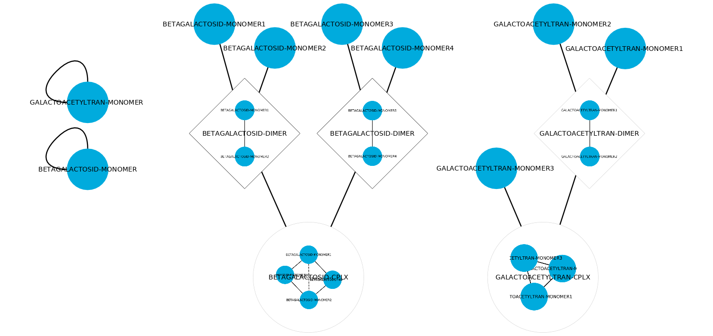

Protein-Protein Interaction Networks¶
Protein-protein interaction (PPI) interaction networks have two columns. In any order and for any number of components, each column lists using comma the interacting proteins or protein complexes. The user should employ brackets to enclose a list of proteins that are part of a complex.
Examples:
1 2 3 | SOURCE TARGET
BETAGALACTOSID-MONOMER BETAGALACTOSID-MONOMER
GALACTOACETYLTRAN-MONOMER GALACTOACETYLTRAN-MONOMER
|
OR
1 2 3 4 5 | SOURCE TARGET
BETAGALACTOSID-MONOMER BETAGALACTOSID-MONOMER
[BETAGALACTOSID-MONOMER, BETAGALACTOSID-MONOMER] [BETAGALACTOSID-MONOMER, BETAGALACTOSID-MONOMER]
GALACTOACETYLTRAN-MONOMER GALACTOACETYLTRAN-MONOMER
GALACTOACETYLTRAN-MONOMER [GALACTOACETYLTRAN-MONOMER, GALACTOACETYLTRAN-MONOMER]
|
Note
Visualization in Cytoscape. Cytoscape cannot import hyper-graphs. To do so, Create simple network and right-click to embed a subnetwork in the corresponding node.
Finally, execute the “Rules from protein-protein.ipynb” to obtain the Rules to model the defined interaction network. The complete rule-based model can be found in the lactose folder from the Network Biology Lab GitHub repository here.
1 2 3 4 5 6 7 8 9 10 11 12 13 14 15 16 17 18 19 20 21 22 23 24 25 26 27 28 29 30 31 32 33 34 35 36 37 | Rule('complex_assembly_rule_0',
prot(name = 'BETAGALACTOSID_MONOMER', up = None, dw = None) +
prot(name = 'BETAGALACTOSID_MONOMER', up = None, dw = None) |
prot(name = 'BETAGALACTOSID_MONOMER', up = 1, dw = None) %
prot(name = 'BETAGALACTOSID_MONOMER', up = None, dw = 1),
Parameter('fwd_complex_assembly_rule_0', 1),
Parameter('rvs_complex_assembly_rule_0', 0))
Rule('complex_assembly_rule_1',
prot(name = 'BETAGALACTOSID_MONOMER', up = 1, dw = None) %
prot(name = 'BETAGALACTOSID_MONOMER', up = None, dw = 1) +
prot(name = 'BETAGALACTOSID_MONOMER', up = 1, dw = None) %
prot(name = 'BETAGALACTOSID_MONOMER', up = None, dw = 1) |
prot(name = 'BETAGALACTOSID_MONOMER', up = 1, dw = None) %
prot(name = 'BETAGALACTOSID_MONOMER', up = 2, dw = 1) %
prot(name = 'BETAGALACTOSID_MONOMER', up = 3, dw = 2) %
prot(name = 'BETAGALACTOSID_MONOMER', up = None, dw = 3),
Parameter('fwd_complex_assembly_rule_1', 1),
Parameter('rvs_complex_assembly_rule_1', 0))
Rule('complex_assembly_rule_2',
prot(name = 'GALACTOACETYLTRAN_MONOMER', up = None, dw = None) +
prot(name = 'GALACTOACETYLTRAN_MONOMER', up = None, dw = None) |
prot(name = 'GALACTOACETYLTRAN_MONOMER', up = 1, dw = None) %
prot(name = 'GALACTOACETYLTRAN_MONOMER', up = None, dw = 1),
Parameter('fwd_complex_assembly_rule_2', 1),
Parameter('rvs_complex_assembly_rule_2', 0))
Rule('complex_assembly_rule_3',
prot(name = 'GALACTOACETYLTRAN_MONOMER', up = None, dw = None) +
prot(name = 'GALACTOACETYLTRAN_MONOMER', up = 1, dw = None) %
prot(name = 'GALACTOACETYLTRAN_MONOMER', up = None, dw = 1) |
prot(name = 'GALACTOACETYLTRAN_MONOMER', up = 1, dw = None) %
prot(name = 'GALACTOACETYLTRAN_MONOMER', up = 2, dw = 1) %
prot(name = 'GALACTOACETYLTRAN_MONOMER', up = None, dw = 2),
Parameter('fwd_complex_assembly_rule_3', 1),
Parameter('rvs_complex_assembly_rule_3', 0))
|
Note
Reversibility of Rules. Atlas writes irreversible Rules for each
reaction declared in the network file. The Parameter('rvs_RuleName', 0))
must be set to non-zero to define an reversible reaction.
Note
Uniqueness of Rule names. Atlas will write Rules with numbered names. Use only one file to model the many interactions the system has.
Note
Simulation. The model can be simulated only with the instantiation of
Monomers and Initials (More here).
Run Monomer+Initials+Observables from metabolic network.ipynb to obtain
automatically the necessary Monomers and Initials (including
proteins and enzymatic complexes). Manually add the necessary Monomers
and Initials for non-enzymatic proteins.
Plotting. The model can be observed only with the instantation of
Observables (More here).
Run Monomer+Initials+Observables from metabolic network.ipynb to obtain
automatically the all possible Observables for enzymatic proteins. Other
observables for proteins should be added manually.